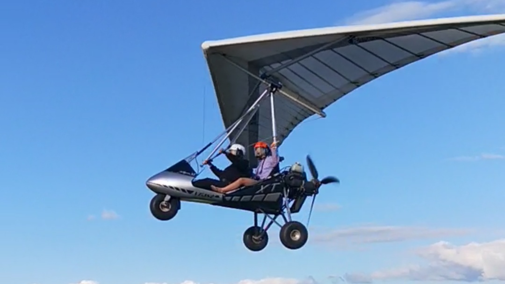
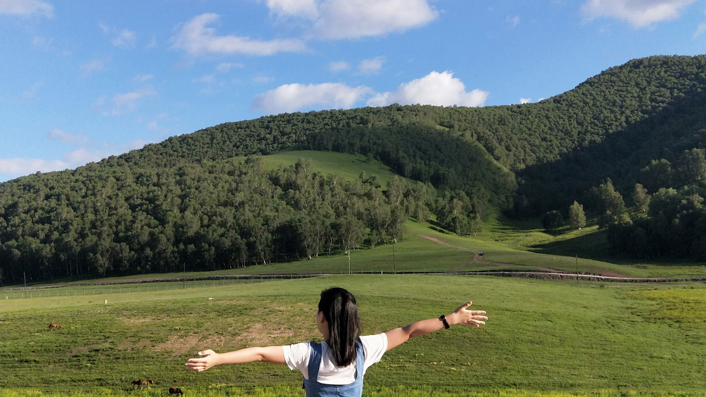
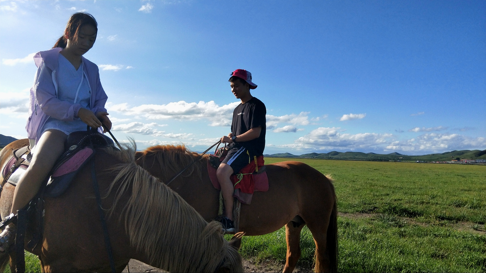

草原上的飞行，不只是一时的冲动导致的，即使它占多数。还有心底里从小就有的一个梦，想飞起来，即使你或许已习以为常，但我却是茫然无知的。其实还是会紧张，其实还是会惊讶。就是这些感觉让我想尝试一下，美好的是你们也满足了我。
PS：想到天空中去看看，为什么呢？因为想知道，当视角与往常不一样时，看到的是什么，体验的是什么，这是图片无法满足的。 -----@自驾游玩内蒙古与沽源

只想拥抱自然。“心旷神怡，宠辱皆忘；把酒临风，其喜洋洋者矣。”、“自驾游一路走走停停，随心所欲。草原真是一个放飞心情的好地方。”、“吃了烤全羊大餐，在农家院前点起了篝火，欢歌笑语，嘻闹一片。”
PS：真正的心情只有自己去体验了知道，珍惜可以休息的时光，让时间更加有意义。大地之大，有太多的惊奇了！有太多的赞叹了！-----@自驾游玩内蒙古与沽源

闪电湖旁边的马场，是一个极佳的体验骑马的地方。从马场离开的时候，有人牵着马儿，而马儿载着你；但回来的时候，就只有马儿载着你啦，是不是很刺激，很跃跃欲试呢？马儿除了方向不好控制，而且爱停下来吃草的不好之处外，其他都很棒，比如说特别听话，跑的也特别快。一个多小时的骑行，简直刺激得不行！
PS：自由自在，随心所欲，看似遥不可及，实则近在眼前。生活奔奔波波，学业忙忙碌碌。有时间了，就自己赚钱出去玩玩吧！ -----@自驾游玩内蒙古与沽源